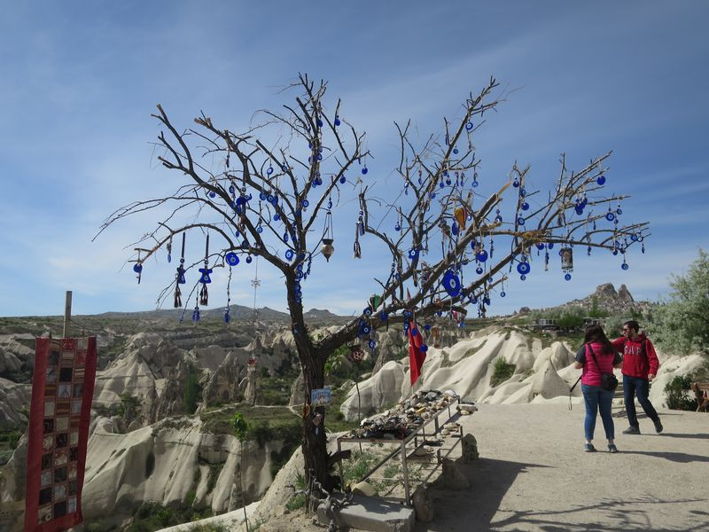

Cappadocia 嘅第三日，喺天台食早餐，終於見到有人玩熱氣球喇，不過得兩粒咁多。Join 咗 green tour，9:30 至 5pm，不過遲咗成半個鐘至有車嚟接我哋，都唔知搞乜。
等車時有另外兩個人都係同一 tour，Jo 同埋 Mo，一個喺伊斯坦堡教書，另一個仍讀緊 PHD，佢哋嚟自 Palestine 嘅 Gaza Strip，我問佢哋係點樣走架，原來都唔係好難，有錢就得，經埃及走。佢哋仲打算讀完書去就返去 Palestine。
旅遊巴終於嚟到，但只見司機唔見導遊，載我哋去到 Göreme Panaroma 就要我哋落車，導遊已經喺度講解緊……原來係集合好多唔同住宿嘅人做一團。仍然未等齊人，所以又喺度等咗好耐。
無聊期間，導遊竟搵我幫手，話有一位團員，係 chinese，但係完全唔識一個英文字，想我每個地方都話佢知集合時間地點。然後我走去嗰個中国人話十分鐘後呢度等。
然後…十分鐘後，佢唔見咗。我同導遊本來都仲見佢喺山邊踎緊，但一走過去就唔見人。然後隔咗一陣阿導遊至喺一間紀念品店搵到佢，導遊話佢當時仲睇緊紀念品……
然後我哋呢團人，分兩部車去 Derinkuyu underground city。途中導遊好感慨咁講話因為恐襲土耳其遊客數量下降咗成 80%，又話對佢哋個人嚟講其實問題唔大，因為原來佢哋嘅人差唔多每人都係農夫，識種嘢，或做手工，但係對於一啲大型或中型公司嚟講，就好大件事。
Derinkuyu 地下城，係 Cappadocia 好多嘅地下城之一，最出名係 Derinkuyu 同埋 Kaymakli，不過聽講話 Kaymakli 得個大字，冇 Derinkuyu 咁多嘢睇。導遊帶住我哋去完一間房又一間房，唔係佢講都唔會知啲房、石刻用來做乜嘅，同埋啲通風設計、石門、教堂、停屍間等等。
然後，中国人又失踪咗！搵番佢之後，我爽性睇實佢算……但慘在之後都要同佢一齊……原本雖然唔鍾意講普通話都算，但之後至慘，好似老奉幫佢影相咁，有時真係想一腳伸佢落山。
睇完 Derinkuyu 就去 Ihlara Valley 嘅所謂行山，只係平路，沿住條河行幾公里。行之前去一個山洞教堂，講解裏面的壁畫，呢個導遊係幾好架，乜都盡講有乜問題盡答。因為廿幾人，經常分散，所以很多時都遲咗開始又遲咗結束。
個中国人因為有人理就全程係咁同我講嘢，好煩，又大聲。佢係南寧人，但只係講普通話！大佬佢年紀大過我架喎(睇個樣)，南寧講白話同粵語同源係發音唔同，但只不過係 1996 年推普十幾年時間就可以令佢哋只係講普通話，我嗰刻好驚，香港嘅粵語係咪都會逃唔過被滅。
行完去食午餐，都幾好味，額外叫咗 Aryan，我每日除了要飲鮮橙汁之外另一樣想飲嘅就係 Aryan，返到香港都搵唔番呢種乳酪飲品。飯後去 Selime Monastery，意想不到，呢度竟然係今日最值得參觀嘅地方。
原來，呢度曾經係《Star Wars》拍攝場地，但冇公開放映過，因為抽起咗，原因不明，有話係因為冇申請過，亦有話係當時政治關係。導遊一上到去就驚叫，話幾日前仲好地地，原本打算介紹一個乜嘢室嘅地方，今天就冇咗，倒塌咗喇。好快佢又補充話，呢啲都係自然過程，始終有一日，呢度係會全部倒下。
Cappadocia 嘅所有名勝都一樣，但亦因為咁至會形成咁樣嘅地貌，人類至會喺度造出呢類建築物。世界都係一樣，冇嘢係永遠嘅，只不過係呢度容易消失。
Selime Monastery 四十分鐘自由活動之後返到集合地方，原本兩部車變得番一部車，因為有幾個團員要趕飛機早走。其實呢啲 tour 話就話 5pm 完，往往一大班人就會搞下搞下遲晒，好似今日咁，我返到去都八點，唔可以預得太盡。
離開 Selime Monastery 回去匆匆望下 Pigeon Valley 然後最後就係參觀玉石工場，回去 Göreme 就完咗今日。

掛咗好多 Nazar 嘅許願樹
 Ihlara Valley
Ihlara Valley

Selime Monastery
2016 Turkey ❮ Previous Next ❯